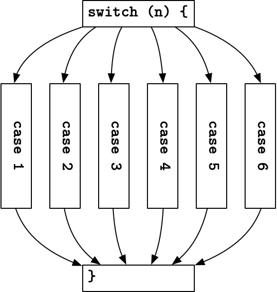
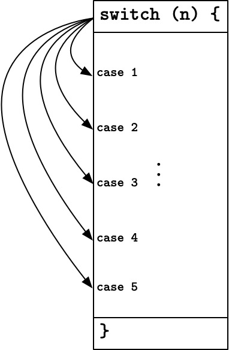

switch 和 break 的故事写在前边: 本文中的 switch 特指 C 中的 swicth 语句, 而诸如 Swift 等语言中的 switch 语句, 本质上是模式匹配 (pattern matching), 和本文无关喵.
我一直都非常喜欢 C 的 switch 语句, 因为它既有高级语言的外表, 又不失汇编的神韵.
有些人在刚开始学编程的时候会把 switch 语句理解成 if-else 语句的语法糖, 这是个典型的谬误, 正确的理解应该是将它看作一段带 case 标签 (label) 的代码.
达夫设备 (Duff’s device) 就是将这种机制运用到极致的一个例子:
switch (count % 8) {
case 0: do { *to = *from++;
case 7: *to = *from++;
case 6: *to = *from++;
case 5: *to = *from++;
case 4: *to = *from++;
case 3: *to = *from++;
case 2: *to = *from++;
case 1: *to = *from++;
} while(--n > 0);
}编译器会为它生成一个数组, 你可以通过索引以 的复杂度获得要调转到的 PC 地址.
.LS: @ jump table
.word .L0+1
.word .L7+1
.word .L6+1
.word .L5+1
.word .L4+1
.word .L3+1
.word .L2+1
.word .L1+1
.LN:
nop
.L0:
mov r3, r4
adds r4, r3, #2
ldrsh r3, [r3]
strh r3, [r5]
.L7:
mov r3, r4
adds r4, r3, #2
ldrsh r3, [r3]
strh r3, [r5]
.L6:
mov r3, r4
adds r4, r3, #2
ldrsh r3, [r3]
strh r3, [r5]
.L5:
mov r3, r4
adds r4, r3, #2
ldrsh r3, [r3]
strh r3, [r5]
.L4:
mov r3, r4
adds r4, r3, #2
ldrsh r3, [r3]
strh r3, [r5]
.L3:
mov r3, r4
adds r4, r3, #2
ldrsh r3, [r3]
strh r3, [r5]
.L2:
mov r3, r4
adds r4, r3, #2
ldrsh r3, [r3]
strh r3, [r5]
.L1:
mov r3, r4
adds r4, r3, #2
ldrsh r3, [r3]
strh r3, [r5]
subs r6, r6, #1
cmp r6, #0
bgt .L13这就是跳转表 (jump table) 啦.
有没有发现它很像我们所熟悉的表驱动法 (table-driven method)?
let week = ["mo", "tu", "we", "th", "fr", "sa", "su"]
let today = week[n]
print(today)它们的本质其实是一样的, 只不过前者驱动的是 PC, 后者驱动的是数据 (当然所谓的 “数据”, 也包括函数指针嘛).
优化 swicth 语句的方法也并非只有跳转表一种. 如果 switch 中的各个 case 的间隙太多, 就不适合用数组索引表示这种映射关系了. 表驱动法用哈希表或树来解决这个问题, 而编译器则会生成使用二分法进行跳转的代码, 思路也是相近的.
所以, 上一边这么长的内容, 和 break 有什么关系呢?
很多人认为 swicth 的每个分支都必须手动添加 break 语句, 否则默认穿透 (fall through) 是一个糟糕的设计. 因为在他们眼中, switch 语句是这样的一种结构.

如果从上边这个角度看, break 语句确实有点突兀. 但我倒觉得, 我们应该把 switch 语句花括号中的所有的代码看成一个整体, 把 case 看成是穿插其中的无关紧要的标签 (label).

这样, 必须手动写 break 就变成一件优雅的设定了喵.
Java 中的 switch 语句和 C 或 C++ 相比, 不仅支持整型 (包括枚举), 还额外支持 String 类型. 不难想到, String 类型其实是没法直接作为跳转表的索引的, 那在 Java 里, switch 语句岂不是要退化成 if-else 语句的语法糖了?
其实呢, Java 会通过哈希来将 String 变为整型, 比如下面这段代码
switch (str) {
...
case "XXX":
code for XXX
case "YYY":
code for YYY
}编译后会变成
switch (str.hashCode()) {
...
case 87384:
code for XXX
case 88377:
code for YYY
}当然, 我们还必须要讨论一下可能出现的哈希碰撞:
第一种碰撞, 是同一个 swicth 语句中不同 case 的碰撞. 假设上例中 "XXX" 和 "YYY" 的哈希值相同, 那就出现了两个一样的 case, 这显然是不行的. Java 会将这二者放进同一个 case, 再用 if-else 语句单独判断:
switch (str.hashCode()) {
...
case 87384: // 假设 "XXX" 和 "YYY" 的哈希值都是它
if (str.equals("XXX"))
code for XXX
else
code for YYY
}第二种碰撞, 是输入字符串和 case 的碰撞. 假设 "ZZZ" 和 "XXX" 的哈希值相同, 那当 str 是 "ZZZ" 时, 程序就会错误地走进为 "XXX" 准备的分支. 这时候还需要一个额外的判断:
switch (str.hashCode()) {
...
case 87384:
if (str.equals("XXX"))
code for XXX
case 88377:
if (str.equals("YYY"))
code for YYY
}当然, 如果 switch 分支很少, 也是可能直接被优化成 if-else 语句的, 不过这和本文主题无关, 就不赘述了喵.
嘛 … 其实这些内容应该没人会不知道叭, 我写这么多主要只是想为 C 里带 break 的 switch 说句公道话, 它真的很棒诶, 可不是什么设计失误.